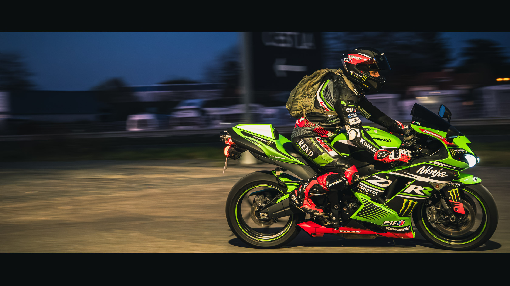
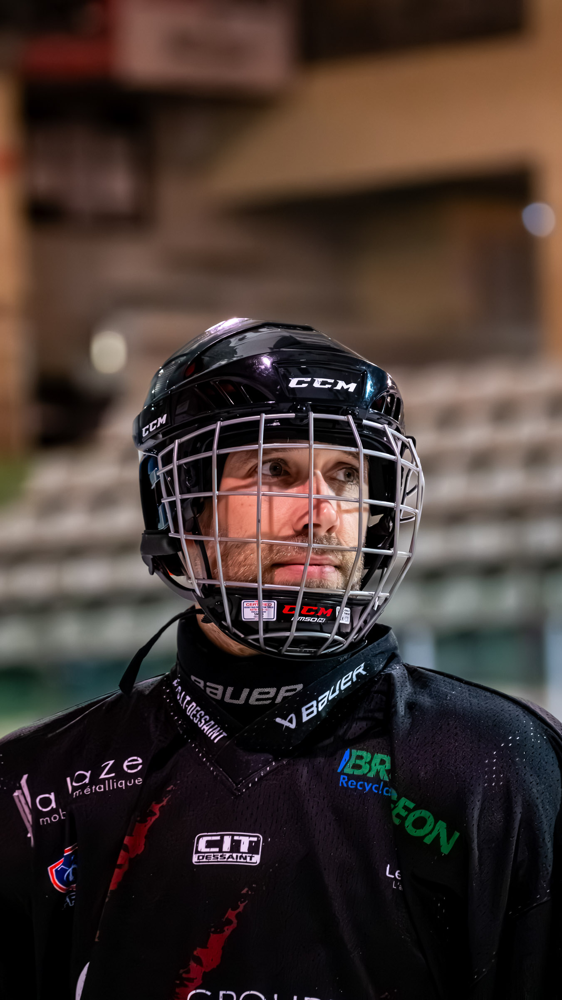
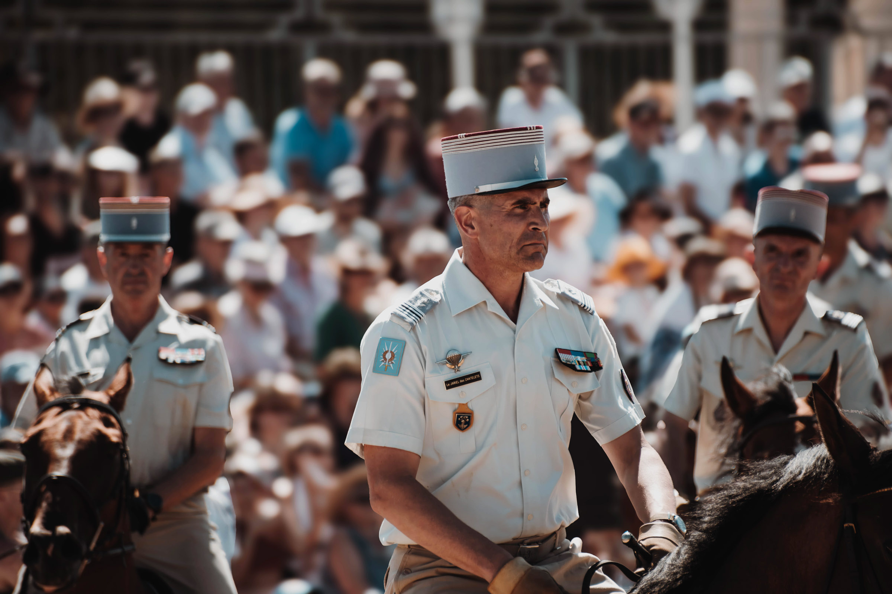
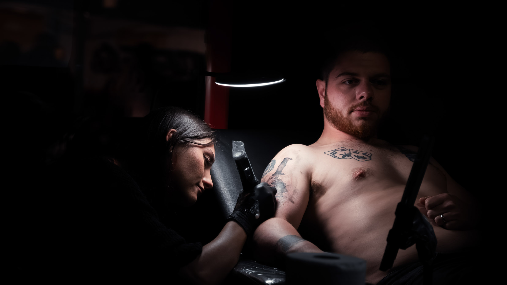

L’instant lisible
Je cherche le moment où le sujet devient évident : une vitesse, un regard, une lumière, une tension, une présence.
Cholet · Clisson · Nantes · Pays de la Loire
Instant.GH rassemble des séries photo de terrain : moto, sport, aviation, animalier, concerts, défense, portraits et événements locaux. L’envie est simple : immortaliser un moment, saisir une émotion, figer le temps avant qu’il ne disparaisse.

Démarche
Je cherche le moment où le sujet devient évident : une vitesse, un regard, une lumière, une tension, une présence.
Une photo peut immobiliser une fraction de seconde, conserver une intensité et rendre visible ce qui disparaît presque aussitôt.
Basé entre Clisson et Cholet. Déplacements possibles en Vendée, Nantes, Pays de la Loire et Bretagne selon le projet.
À propos
Instant.GH est né d’une envie simple : transformer des scènes vécues sur le terrain en images fortes, sobres et lisibles. Moto, hockey, meetings aériens, concerts, animalier ou événements historiques : je privilégie les sujets où le mouvement, la lumière et l’émotion existent déjà.
Chaque série est construite pour raconter un sujet avec cohérence : une accroche forte, des détails, de l’action, une ambiance et une image finale mémorable.
Pour une collaboration, une série photo ou un événement à documenter, le contact reste simple et direct.
Univers photo
portraits pilotes, action circuit, détails mécaniques, muscle cars

hockey, action glace, portraits joueurs, coulisses

meetings aériens, acrobaties, vintage WWII

concerts, festivals, événements nocturnes, reconstitution

blindés, défilés, cavalerie

faune, oiseaux, macro, animaux de compagnie

sportifs, musiciens, artisans, motards
Séries
Les séries sont pensées pour montrer une cohérence : une image forte, des variations, des détails et une ambiance. Les photos sont compressées pour le web afin de garder un site fluide sur ordinateur comme sur téléphone.
Projets
Série événementielle
Une sélection courte et cohérente : photo d’accroche, détails, action, ambiance, image finale.
Image de club
Produire des images qui montrent l’intensité, la précision du geste et l’identité du groupe.
Présence numérique
Séries prêtes pour Instagram, TikTok, affiches, site ou supports de communication.
Formats possibles
Documenter un événement, une journée associative, un rassemblement ou une scène de terrain.
Créer une sélection cohérente pour réseaux sociaux, communication locale ou souvenir d’un moment fort.
Photographier une personne dans son univers : motard, sportif, musicien, artisan ou passionné.
Échanger autour d’un projet photo local, d’une série à construire ou d’une idée à documenter.
Contact
Pour une demande photo, une collaboration, un événement local ou une série à construire, vous pouvez me contacter directement par mail ou via Instagram.